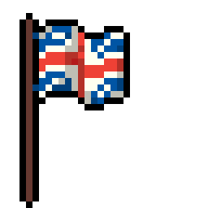
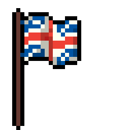

Hola, soy Felipe y bienvenido a mi página web :)
Me llamo Felipe Lorenzo Martínez y soy estudiante de matemáticas y informatica en la universidad de Bonn.
Estoy estudiando un master en informatica y me especializo en las matematicas discretas y la informatica teórica.
Si quieres ver mi tesis de fin de grado la puedes encontrar aqui.
Por aquí os dejo algunas cosas que he hecho que igual son interesantes.
Si te interesan códigos mal hechos en c++ para problemas demasiado específicos os dejo por aqui mi github para que os lo gozeis.
También estoy en el consejo de estudiantes de mi universidad! Si os apetece mirar lo que hacemos podeís mirar aquí.
Si alguna vez hago alguna otra cosa útil en mi vida la podréis encontrar por aqui también.
Os he presentado a nuestro Mesias Brandon Sanderson? Si estais buscando algo que leer os recomiendo leeros la primera trilogia de mistborn. Si no os gusta me podeis escribir para que os explique por que no teneis razón.
Si os apetece ver que tipos de peliculas me gustan podeis visitar mi perfil de letterboxd.
Tambien me podeis recomendar algo vosotros si os apetece.
Muchas gracias por visitar y recuerda las palabras de Mario: